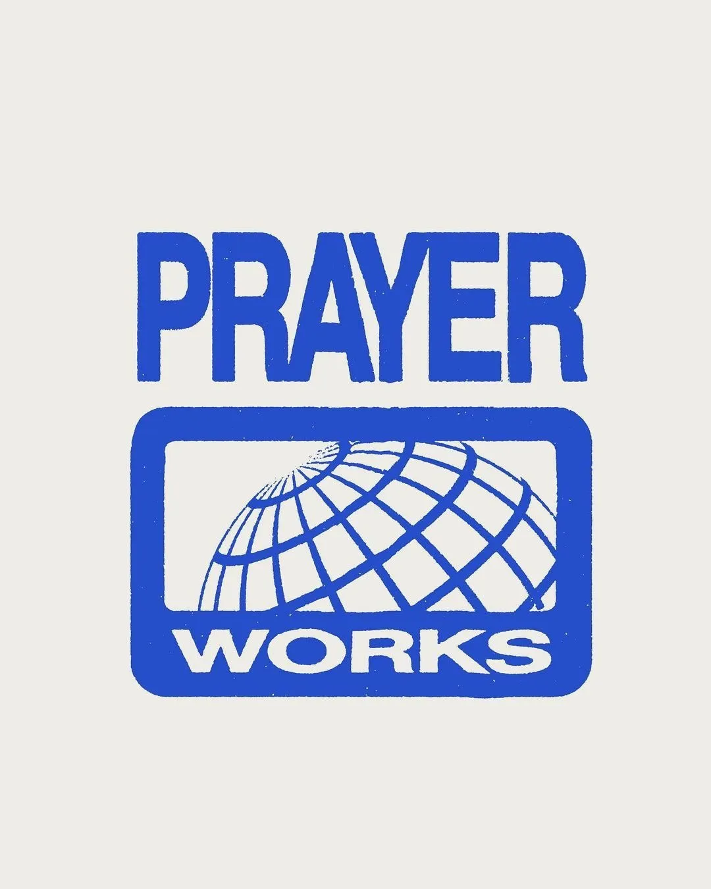

Если вы думаете, что ваши панические атаки по ночам, ипотека на 20 лет, выгорание к тридцати и физиологическая неспособность к глубокому оргазму — это результат вашей личной некомпетентности, примите поздравления. Вас блестяще на!бали. Ваша невротическая наивность — самый ликвидный актив системы, в которой мы живем. Правда жить осталось недолго.
Добро пожаловать в «горизонт событий». То, что ведущие вечерних новостей называют «турбулентностью», системные аналитики Давоса и Пентагона сухо именуют мета-кризисом. Это математическая точка невозврата, где экспоненциальный взрыв ИИ, агония биосферы (минус 73% популяций позвоночных с 1970 года) и глобальный долговой пузырь в $338 трлн стянулись в один фатальный узел.
Мета-кризис не случится завтра. Он уже обрушивается лавиной. Посмотрите на саммиты глав мира, вы услышите одну тему — коллапс экономической и политической систем. В атмосфере Земли ракет больше, чем самолетов. Новости кишат прогнозами третьей мировой. Представители мировых организаций признают, что не знают, как удержать мир от разрушения. Европа в панике.
Консерватизм и стабильность — наименее устойчивая форма жизни при глобальной смене полюсов, поэтому если вы относите себя к среднему классу — самое время бежать с корабля.
При этом тема цивилизационного коллапса точно не попадает в чарты новостей и не фигурирует в планах на год большинства людей. Официально нам продают надвигающегося черного лебедя как временный локальный сбой. Но трезвый инженерный взгляд вскрывает иное: этот кризис — не внезапный. Это исход безупречно работающего алгоритма и предсказуемая мат-модель. Самоубийства.
В системном анализе этот рубеж называют «Точкой Сингулярности Кризисов». Это момент, когда в зоне риска не отдельная система или государство, а все человечество.
Мы находимся внутри цивилизационной операционной системы, которую в современной теории игр (спасибо Джиму Ратту, Бретту Вайнштейну и Дэниелу Шмахтенбергеру) называют «Игра А».
Что такое «Игра А»?
«Игра А» — это система, основанная на соперничестве (rivalrous dynamics). Проще говоря: паразитизм.
Её фундаментальный принцип: «Я выигрываю, если ты проигрываешь. Или мы оба выигрываем, но проигрывает общее поле (природа/будущее)».
Принято считать, что стратегия борьбы была не просто эффективна, а естественной и неизбежной последние 10 000 лет. Мы привыкли верить, что именно она позволила нам победить голод и построить небоскребы. Но нет.
Стратегия паразитизма охватывала Землю последние 10 000 лет и взяла абсолютный верх над стратегией Холизма (симбиоз, целостность) около 2000 лет назад, в Римской Империи. Переход, который мы называем «Нашей Эрой».
Специфика «Игры А» — заложенный в нее принцип самоуничтожения при условии ограниченных ресурсов. Ее исходный код — венчурный каннибализм и соперничающая динамика с нулевой суммой: чтобы я выиграл, ты должен сдохнуть, а издержки мы спишем на природу. Игра не может остановиться, потому что остановка означает крах долговой пирамиды.
Тысячелетиями этот паразитический движок обеспечивал экспансию элит. Но сегодня, будучи помноженным на мощь технологий XXI века в замкнутой колбе нашей планеты, этот код математически гарантирует 100-процентную самоликвидацию вида. «Игра А» оперирует в строгой логике раковой опухоли: она истово верит в бесконечный линейный рост, методично сжирает носителя и торжественно дохнет вместе с ним.
Чтобы перехватить штурвал самолета, летящего в бетонную стену, нужно препарировать механику управления. Речь не о рептилоидах и тайных ложах (хотя им тоже привет!), а о циничной волновой физике, нейробиологии и искусстве управления массами.
Физика рабства: Гашение волн и уплощение реальности
Фундаментальный принцип удержания масс — римское divide et impera (разделяй и властвуй) — это не заезженный политический лозунг. Это безжалостный закон волновой интерференции.
В физике, если фаза и частота волн совпадают, они вступают в резонанс, и их суммарная энергия возводится в квадрат. Экспоненциальный прорыв (когда система обретает несокрушимую созидательную мощь) начинается при коэффициенте когерентности, равном единице. Именно поэтому матрица «Игры А» спроектирована так, чтобы искусственно удерживать этот показатель ниже единицы. Иначе система рухнет за сутки.
Поэтому Архитекторы обязаны генерировать перманентное трение. Нас искусственно расщепили на фрагменты, вбрасывая веру в дуализм: дух против материи, мужчины против женщин, левые против правых. Иерархия питается энергией этого социального противофазного гашения — дуализма. Элитам больше не нужно строить физические концлагеря; достаточно сделать так, чтобы мы бесконечно резали друг другу глотки в каютах идущего ко дну «Титаника».
Чем контрастнее дуализм, тем больше трения, тем меньше у вас сил жить и развиваться на выходе. А что может быть контрастнее концепции вечного ада и рая? Правда эмпирически проверить их существование в рамках жизни невозможно, придется принять на веру.
Сегодня этот механизм доведен до абсолюта Кремниевой долиной. 90% глобальных медиа контролируются шестью холдингами. Алгоритмы соцсетей не ищут истину — они оптимизированы под engagement (вовлеченность) через гнев и поляризацию. Окно человеческого внимания сузилось до 8 секунд. Тот, кто мыслит 15-секундными тиктоками, физиологически утрачивает навык sensemaking (смыслообразования). Он никогда не проследит причинно-следственную связь между своей ипотекой и вырубкой Амазонии. Расщепленное, воюющее само с собой общество безопасно.
Духовный Империализм: Технология Автоматизации Контроля
Чтобы понять природу «Игры А», необходимо вернуться к моменту её институциональной кристаллизации. Традиционная историография учит нас, что Римская империя пала в 476 году н.э. Однако системный анализ институтов и правовых структур указывает на иное: Рим не пал, он трансформировался за счет самой главной технологии эры — Христианства.
Переход от античного Рима к христианскому Риму был стратегическим маневром выживания элит и управленческих структур. Церковь создается для удержания власти и капитала и унаследует функцию, структуру и принципы Имперской власти.
Император Константин, легализовав христианство Эдиктом Милана (313 г.) и созвав Никейский собор (325 г.), фактически национализировал веру, превратив её в инструмент имперской унификации. Отказ принимать христианство приравнивался к государственной измене и карался публичной казнью. К слову, на Киевской Руси любимый многими Ярослав Мудрый, насильственно обрекший свой народ на духовную каторгу и вечное рабство, не далеко ушел.
Главной инновацией Рима стала доктрина «Первородного греха». Юридически это был первый в истории человечества социальный кредит с пожизненным отрицательным балансом. Вы виноваты по факту рождения. Так был запущен движок вечного дефицита собственной ценности. Система произвела перекрут реальности: «Не живи сейчас. Жизнь — это черновик. Смиряйся, терпи, плати десятину (сегодня — налоги и 70% дохода на кредиты), а дивиденды получишь в раю».
Теологическая революция позволила перенести дорогостоящую систему внешнего контроля в плоскость сознания человека. Смена кайданов и надзирателей на чувство вины, выученную неполноценность и страх вечных мучений была настолько эффективной, что стала прототипом для всех общественных структур — от банков до больниц и детских садов. Внедрив тягу к страданиям и отказ от суверенности в духовно-нравственный код человека, он обрел регенеративные свойства — и стал равноценной частью ДНК.
Массовый террор Инквизиции (до 650 000 сожженных заживо на заре капитализма) не имел отношения к религиозному фанатизму. Это была хладнокровная рыночная зачистка конкурентов. Уничтожая повитух, травниц и женщин-целительниц, система вырубала под корень альтернативу для формирующейся профессиональной, платной патриархальной медицины. Женское тело было объявлено «вратами дьявола», национализировано и превращено в бесплатный станок для бесперебойного производства рабочей силы.
В XXI веке этот механизм доведен до алгоритмического абсолюта. Ватикан сменился Кремниевой долиной. ИИ-ленты мета-корпораций не запрограммированы на поиск истины — они оптимизированы под engagement (вовлеченность). Алгоритмы ежедневно скармливают миллиардам людей микродозы возмущения, сталкивая их лбами. Итог? Окно внимания сузилось до 8 секунд — это клиническая когнитивная дистрофия. Расщепленное, воюющее само с собой общество физиологически утратило навык «смыслообразования» (sensemaking). Тот, кто мыслит 15-секундными тиктоками, никогда не проследит причинно-следственную связь между своим кредитом и уничтожением Амазонии. Он больше не субъект политики, он — дата-сет для генерации прибыли.

Рассинхрон: Инверсия жизни и угон времени
Чтобы заставить людей добровольно обслуживать этот конвейер, потребовался величайший темпоральный хак — сдвиг фаз восприятия времени и перекрут реальности.
Доктрина «Первородного греха» стала первым в истории социальным кредитом с пожизненным отрицательным балансом: вы виноваты по факту рождения. Ты — и твои потомки — обязаны выплачивать долг за страдания Христа (не имеющего к этому дьявольскому картелю в рясах никакого отношения).
Система произвела тотальную инверсию добра и зла, провозгласив: «Не живи сейчас. Жизнь — это грязный черновик. Страдай, терпи, плати налоги, а дивиденды получишь в раю после смерти». Экстатическое удовольствие, телесность и жажду познания объявили источником скверни. Смирение и животный страх инакомыслия вбивались в нас каленым железом.
Параллельно нас оторвали от природных резонансных циклов. Вся биосфера функционирует в резонансном спиральном ритме 13 лун по 28 дней. В 1582 году Ватикан пересадил мир на механистичную аритмию 12:60 григорианского календаря. Природную спираль разогнули в плоскую линию дедлайнов. Этот жестокий рассинхрон сломал нашу биологию. Время перестало проживаться — оно начало тратиться.
Эпистемоцид: Костры амнезии и кража технологий
Удерживать миллиарды в амнезии невозможно без тотальной кастрации прошлого. Ватиканские Апостольские архивы — это 85 километров строго засекреченных стеллажей. Уничтожение 90% дохристианских текстов Европы, пепел Александрийской библиотеки, сожжение кодексов майя — это системное стирание конкурентных онтологий. Это эпистемоцид — убийство знаний.
Нам навязали гордыню линейного прогресса: от неандертальца с дубиной прямо к Илону Маску. Но как в эту убогую прямую вписываются египетские гранитные керны эпохи додинастического периода? Спиральные риски на них указывают на скорость подачи сверла в 0.100 дюйма за оборот — это в 500 раз превышает возможности наших лучших алмазных буров с ЧПУ, что математически требует применения высокочастотного ультразвука. А мегалитический гипогей на Мальте возрастом более 5000 лет или Ньюгрейндж в Ирландии, архитектурно выверенные под акустический резонанс строго в 110–111 Гц? Современные ЭЭГ доказывают: эта частота аппаратно отключает речевой центр левого полушария (внутреннего цензора) и переводит мозг в трансовые состояния расширенного сознания.
Цивилизации до нас владели технологиями волнового симбиоза. А Церковь тем временем сжигала ученых за мысль о круглой Земле (сферичность — это объем и цикличность, а управлять рабами можно лишь на плоскости линейного страха).
В XX веке корпорации продолжили традицию костров. Когда Никола Тесла подошел к извлечению бесплатной беспроводной энергии из ионосферы, банкир Дж. П. Морган обрубил проект одной фразой: «Куда я здесь поставлю счетчик?». Доступ к изобилию фатален для экономики дефицита. Архивы Теслы изъяло ФБР. Когда Вильгельм Райх в 1950-х успешно лечил онкологию биоэнергетическим путем (оргонные аккумуляторы), американская FDA сгноила его в тюрьме, а тонны его научных трудов официально сожгли в мусоросжигателях Нью-Йорка. Нам не не хватает технологий спасения — у нас просто нет к ним допуска.
Роял Райф успешно лечил рак направленным частотным резонансом. Его микроскопы разгромила медицинская ассоциация (АМА), а врачей лишили лицензий.
Инженерия покорности: Когнитивная дистрофия
Чтобы конвейер эксплуатации работал, заключенные не должны осознавать собственного рабства. Свобода действий начинается со свободы мысли. Соответственно, необходимо установить контроль не только над доступом к информации (стертая и перевернутая история), но и над мировоззрением, мыслительным процессом, исключив латеральное, критическое, абстрактное и метарациональное мышление. Тем самым отрезав людей от возможности замечать сложные взаимосвязи, задавать неудобные вопросы, выражать себя не общепринятым путем.
Система воспитания и образования заточены под функцию мыслительной кастрации и подавления воли.
Прусская модель образования, импортированная всем миром в XIX веке, создавалась для подготовки лояльных солдат и клерков. Звонки, убивающие концентрацию, дробление картины мира на не связанные предметы, страх ошибки и зависимость от внешней оценки формируют удобных исполнителей с атрофированной волей. Выпускник — это оптимизатор деталей, не способный осознать, что в целом он строит лагерь (по тестам NASA, школа снижает врожденную креативность на 91%). Попытка вырваться — например, перевести ребенка на анскулинг — во многих странах сегодня криминализирована и грозит медицинским киднеппингом. Система прямо заявляет: ваши дети — это залог обеспечения государственного долга.
В цифровую эпоху контроль перешел на нейробиологический уровень. Биохимия бьет по когнитивным функциям: от нейротоксинов и микропластика, снижающих популяционный IQ, до массового фторирования воды, ведущего к доказанной кальцификации эпифиза (шишковидной железы — биологического приемника интуиции и регулятора циркадных ритмов).
Для блокировки любой попытки выхода за пределы матрицы система наложила жесточайшее табу на Эрос и измененные состояния сознания. Сексуальная энергия, мощнейший творческий ресурс биологии (понимаемый в древних традициях как инструмент духовной трансформации), была стигматизирована. Фрустрация сублимировалась в агрессию и гиперпотребление — идеальное топливо экономики. Энтеогены (псилоцибин, ДМТ), способные растворять эго-конструкции и депрограммировать навязанные социальные установки, криминализированы. При этом алкоголь и сахар, убивающие миллионы людей, легальны — они анестезируют стресс и возвращают покорного раба на фабрику.
Иллюзия истины и доверия: Пищевая цепь матрицы
Наука, задуманная как метод радикального сомнения, выродилась в картель грантового консенсуса. 75% исследований спонсируют корпорации. Истина сегодня определяется бюджетом заказчика, а 95% «негативных» результатов навсегда ложатся в стол.
Сначала транснациональный агропром кормит население субсидированным сахаром, микропластиком и фторидом (доказано кальцифицирующим шишковидную железу — биологический орган интуиции). Когда тело закономерно ломается, вас встречает Фарма — монстр с оборотом в $1,6 трлн. С 1950-х годов медицина не вылечила окончательно ни одной хронической болезни. Зачем резать курицу, несущую золотые яйца? Инсулин, себестоимость которого $3, продается за $300 (наценка 10 000%). Здоровый пациент — это упущенная выгода. Идеальный юнит — хронически больной клиент с пожизненной подпиской на препараты. Маркетологи, считайте LTV с учетом, что каждый 4 житель развитых стран пожизненно пьет хотя бы 1 фарм-препарат. А для трезвого взгляда на ваш набор wellness-БАДОВ проверьте коэффициент усвоения (до 10%) и умножьте на стоимость банки. Вам ведь не дадут доступ к капельницам, единственному эффективному способу заявленные витамины и минералы впитать?
Даже индустрия психологии (на $4,2 трлн) приватизирована для адаптации к рабству. Ваш праведный гнев на тошную бессмысленность работы по 60 часов в неделю немедленно медикализируется. Вместо бунта коучи продают вам mindfulness, чтобы вы могли продуктивнее дышать перед тем, как снова сесть за весла на корпоративной галере.
А чтобы отмыть триллионы и репутацию, элиты создали институт современной «благотворительности». Экология стала элитной прачечной: корпорации выкачивают из государств $7 трлн субсидий в год на ископаемое топливо, убивая пресную воду, а их владельцы переводят активы в безналоговые трасты и помпезно жертвуют 0,1% на спасение редких лягушек. «Зеленый капитализм» — это издевательский оксюморон, предлагающий тушить пожар бензином, заставляя нас покупать те же товары, но с наценкой «эко».
Кража Эроса и зачистка смыслов: Иммунный ответ Системы
Для полного контроля система наложила жесточайшее табу на нашу жизненную силу. Сексуальная энергия (Эрос) тотально демонизирована. Не из-за пуританской морали. Эрос — это мощнейшая созидательная энергия биологии. Человеком, соединенным со своей дикой, экстатической телесностью, физически невозможно управлять.
Система блокирует этот поток, и подавленная сексуальная энергия (фрустрация) перенаправляется в нужные русла: в разжигание агрессии, в племенные войны, в неконтролируемое обжирание и бесконечный шопоголизм. Война — это сублимированная сексуальная фрустрация масс, мастерски конвертируемая в прибыль ВПК.
По той же причине система ведет беспощадную войну с измененными состояниями сознания. Алкоголь и сахар, убивающие миллионы, легальны — они анестезируют раба и возвращают его к станку. Энтеогены (псилоцибин, ДМТ) строго криминализированы, потому что они аппаратно растворяют эго и деинсталлируют матрицу навязанного социального программирования. Война с психоделиками — это панический страх системы потерять монополию на реальность.
Любые лидеры, обладавшие достаточным влиянием, чтобы транслировать в массы альтернативные частоты свободы и когерентности, сталкивались с жесточайшим иммунным ответом матрицы — от дискредитации до физической ликвидации. Джон Леннон был застрелен «фанатиком» (слышавшим «голоса в голове») в самый разгар антивоенного LSD-движения, срывавшего американскую мясорубку во Вьетнаме. Джим Моррисон, взламывавший социальные табу, закончил жизнь в парижской ванне при невыясненных обстоятельствах. Майкл Джексон — артист, обладавший беспрецедентным мировым влиянием, бросивший вызов музыкальному картелю (выкупив каталог ATV) и открыто говоривший о манипуляциях медиа, — был методично растоптан прессой, загнан в угол и уничтожен связкой продажной фармакологии и корпоративных интересов.
Система не прощает тех, кто пытается переписать ее алгоритм и увести паству за пределы загона.
Протокол Выхода
Снимем розовые очки: шансы человечества выжить в логике «Игры А» строго равны нулю. Нельзя выиграть у казино, играя по его алгоритмам. Механизм, настроенный на бесконечное извлечение выгоды из конечного субстрата, остановится только тогда, когда сожрет последнюю живую клетку на планете.
Ошибка всех революций — попытка победить Рим методами Рима: через борьбу, митинги и кровь. Борьба (трение) — это родное топливо системы. Любой протест лишь питает эгрегор Матрицы. Единственный способ обрушить систему — перестать ее питать. Сделать ее нерелевантной, совершив фазовый переход из парадигмы доминирования в «Игру Б» (регенеративную архитектуру симбиоза omni-win-win).
Как активировать этот протокол лично?
1. Когнитивный суверенитет
Прекратите быть бесплатной батарейкой. Заберите свое внимание у машин поляризации. Информационная анорексия и отказ питать Игру А потреблением контентного, пищевого и химического мусора — это ваш первый политический акт саботажа. Откройте свой инстаграм. Удалите всех, к кому вы не испытываете искренней любви или же кто не питает ваше вдохновение и творчество. Все, от чего вы чувствуете себя «недо-» выкачивает из вас жизнь.
2. Возврат Эроса
Сексуальная энергия (Либидо) — это не индустрия порнографии, это базовая, самая мощная созидательная сила биологии. Древние традиции использовали ее для трансформации сознания. Церковь демонизировала Эрос, потому что человеком, соединенным со своей дикой, экстатической жизненной силой, физически невозможно управлять. Его фрустрацию больше нельзя сублимировать в шопоголизм и депрессию. Разблокировка сакральной телесности — это возврат к источнику энергии, не облагаемому налогами.
3. Расширение сознания и депрограммирование
Система легализовала алкоголь и сахар, убивающие миллионы, потому что они анестезируют раба и возвращают его к станку. Но она объявила беспощадную войну энтеогенам (псилоцибину, аяуаске, ДМТ). Почему? Потому что психоделики аппаратно растворяют эго и смывают навязанное социальное кондиционирование. Они обнажают голограмму матрицы. Война с измененными состояниями сознания — это не забота о здоровье, это панический страх системы потерять монополию на реальность.
4. Деконструкция Эго
Запомните: быть нормальным и хорошо адаптированным в глубоко больном обществе — значит быть смертельно больным. Иллюзия отделенности (эго) — это вирус «Игры А». Откажитесь от конкуренции. Опирайтесь на число Данбара (до 150 человек). Формируйте малые группы, основанные на глубоком резонансе и доверии. Десяток синхронизированных людей обладает мощностью лазера, прожигающего ткань реальности. Миллион разделенных потребителей генерирует лишь белый шум и углекислый газ.
5. Резонанс вместо подавления
Вся патриархальная система оперирует базовой физикой трения. Брак, корпорация, государство в рамках старой модели — это всегда вертикаль, где есть субъект (кто подавляет) и объект (кого подавляют). Иерархия расходует колоссальные объемы энергии просто на то, чтобы удерживать нижние слои в подчинении и гасить их волю. Выход из «Игры А» требует полной, безжалостной перепрошивки сознания. Это означает отказ от любимого вопроса человечества: «Кто здесь главный?». На смену механике подавления должна прийти физика резонанса.
Резонанс в семье и обществе — это состояние, при котором системы не тратят энергию на борьбу за контроль. Если вы находитесь в резонансе, ваши частоты совпадают, и амплитуда ваших возможностей возводится в квадрат. В резонансной модели семьи партнеры отказываются от контракта на взаимное обслуживание быта и неврозов. Власть децентрализуется. Вы больше не меряетесь эго, вы создаете симбиотическую среду, где успех одного автоматически усиливает другого (omni-win-win). Это требует чудовищной по меркам старого мира смелости: отказаться от доспехов, снять внутренние защиты и позволить себе быть уязвимым, потому что только открытая система способна резонировать.
Матриархат
Да, именно так. Давайте будем циничны: 10 000 лет абсолютного мужского менеджмента, построенного на экспансии, захвате и доминировании, привели цивилизацию к экзистенциальному тупику. Мужская модель блестяще справилась с постройкой небоскребов и баллистических ракет, но провалила главный биологический KPI любого вида — накопление, подавление и доминирование. Количество ценой жизни.
Природа женской власти кардинально иная. Ее эволюционная задача — не узурпация, не захват соседнего водопоя и не выстраивание вертикали, а культивация.
Если посмотреть на наших ближайших генетических родственников — бонобо — мы увидим абсолютно матриархальное общество. У них физически отсутствует концепция межгрупповых войн, убийств сородичей и смертельной борьбы за статус. Они гасят конфликты через эмпатию, социальные связи и сексуальную игру.
Переход к матриархальной модели в «Игре Б» — это не про то, чтобы просто посадить женщин в кресла CEO, заставив их играть по мужским правилам корпоративного каннибализма. Это полный демонтаж самих кресел. Это смена парадигмы с «покорения природы» на интеграцию в нее. Расширение сознания начинается там, где заканчивается животная потребность доминировать, и начинается взрослая способность созидать.
ИТОГ
Машина старого мира догорает, тушить пожар или бороться с ним бессмысленно. Времени у нас немного, играть в приличие или забвение не выгодно никому.
Играть по правилам «нормальных» и вписываться в правила Игры А лично мы с Владом пробовали, — нам не понравилось, no thanks. Поэтому последние два года мы отреклись от репутации социально понятных и занялись исследованиями, экспериментами и испытаниями на прочность модели Б. Симбиоз. Резонанс. Игра. Творчество. Святость Сексуальности.
У нас получилось. Теперь мы строим инфраструктуру под новый мир — изобилия, творчества, кайфа. Мир Богов. В котором не пресно-по-прилично-духовному-благостно. А в котором весело и о+уенно.
Открываем 49 мест для первой ноды резонансной сети.